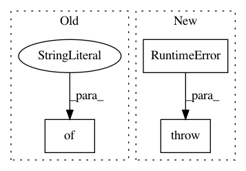

249c21346208b682d128e28fe4480262f8b76cd8,torch/distributed/optim/zero_redundancy_optimizer.py,ZeroRedundancyOptimizer,state_dict,#ZeroRedundancyOptimizer#,393
Before Change
partition.append((start, end))
start = end
return {
"state": [s["state"] for s in self._all_states],
"param_groups": param_groups,
"partition": partition,
"local_state_dict": False,
}
@staticmethod
def rank_local_state_dict(rank: int, state_dict: dict) -> dict:
Returns the local_state_dict for a given rank.
After Change
if len(self._all_states) == 0:
raise RuntimeError(
"Optimizer state has not been consolidated on this rank. \
Please call `consolidate_state_dict()` on all ranks beforehand if you meant to save the global state"
)
// Unify the shard states and the state that pytorch would expect, given the model.
// Indexation needs several redirections, since each shard only knows a limited scope of the model
// - get the pytorch compliant parameter indexing
In pattern: SUPERPATTERN
Frequency: 4
Non-data size: 3
Instances
Project Name: pytorch/pytorch
Commit Name: 249c21346208b682d128e28fe4480262f8b76cd8
Time: 2021-02-27
Author: benjamin.lefaudeux@gmail.com
File Name: torch/distributed/optim/zero_redundancy_optimizer.py
Class Name: ZeroRedundancyOptimizer
Method Name: state_dict
Project Name: onnx/onnxmltools
Commit Name: 9a24286338298ed7a75ac564054c5ab8d5580e84
Time: 2018-05-29
Author: wschin@outlook.com
File Name: onnxmltools/convert/keras/operator_converters/Pool.py
Class Name:
Method Name: convert_keras_pooling_core
Project Name: tensorflow/models
Commit Name: 0f0c7745d169abd3d9c37e59a7a4ed2b1db14d75
Time: 2020-06-26
Author: rathodv@google.com
File Name: research/object_detection/meta_architectures/center_net_meta_arch.py
Class Name: CenterNetMetaArch
Method Name: restore_map
Project Name: onnx/onnxmltools
Commit Name: 7483270e1df4df7dd2bbe636aa4c5b92bd07fee4
Time: 2019-11-13
Author: xadupre@users.noreply.github.com
File Name: onnxmltools/convert/lightgbm/operator_converters/LightGbm.py
Class Name:
Method Name: convert_lightgbm